INTRODUCTION
Portfolio Học Tập · Học kỳ 2 · 2025–2026
Giới thiệu bản thân
Tôi là sinh viên năm nhất ngành Khoa học Dữ liệu, yêu thích khám phá các con số và tìm ra ý nghĩa ẩn sau dữ liệu. Ngoài giờ học, tôi quan tâm đến công nghệ, trí tuệ nhân tạo và các xu hướng chuyển đổi số đang diễn ra trong cuộc sống hàng ngày.
Năng lực & Kỹ năng số đang rèn luyện
Mục tiêu học tập & định hướng phát triển
Trong quá trình học, tôi tập trung xây dựng nền tảng vững chắc về phân tích dữ liệu, học máy và lập trình Python. Về lâu dài, tôi mong muốn trở thành một Data Analyst hoặc Machine Learning Engineer, góp phần ứng dụng dữ liệu để giải quyết các bài toán thực tế trong doanh nghiệp và xã hội.
🎓 Ngắn hạn (2025–2026)
Hoàn thành xuất sắc năm nhất; nắm vững Python, SQL cơ bản; xây dựng portfolio cá nhân chứng minh năng lực số.
🚀 Trung hạn (2026–2028)
Thực tập tại doanh nghiệp công nghệ; nghiên cứu Machine Learning ứng dụng; tham gia các dự án mã nguồn mở.
🌟 Dài hạn (2028+)
Trở thành chuyên gia Data Science; đóng góp cho việc ứng dụng AI giải quyết bài toán thực tiễn tại Việt Nam.
Mục tiêu của Portfolio này
- ✓Thể hiện các kỹ năng số đã học và rèn luyện trong học kỳ một cách có hệ thống, khoa học và minh bạch.
- ✓Lưu trữ sản phẩm cá nhân dễ dàng truy cập và chia sẻ, tối ưu hóa trải nghiệm người dùng đa phương tiện.
- ✓Ghi lại hành trình học tập làm tài liệu tham chiếu cho tương lai, tạo nền tảng phản tư và cải tiến liên tục.
- ✓Thể hiện khả năng tích hợp đa công cụ AI (Gemini, Dreamina, Canva) vào quy trình tạo ra sản phẩm chuyên nghiệp.
Demo Portfolio
Hướng dẫn sử dụng Portfolio
PROJECT
6 bài tập thực hành · Minh chứng chi tiết · Quy trình học tập
🎯 Mục Đích Bài Tập
Thiết kế và tổ chức một cây thư mục học tập khoa học, áp dụng các quy tắc đặt tên tiêu chuẩn quốc tế và quản lý phiên bản hiệu quả. Hệ thống được xây dựng theo nguyên lý Information Architecture — đảm bảo tính nhất quán, khả năng mở rộng và dễ truy xuất tự động trong dài hạn.
🧠 Triết Lý Thiết Kế Cấu Trúc Dữ Liệu
Cấu trúc thư mục không chỉ là nơi lưu file — đó là hệ thống phân loại tri thức cá nhân. Tôi áp dụng mô hình phân cấp 4 tầng lấy cảm hứng từ cách tổ chức dữ liệu trong cơ sở dữ liệu quan hệ:
HocTap_2026HocKy_01Mon_GiaiTich1BaiGiang / BaiTap💎 Hệ Thống Quy Tắc Đặt Tên Sáng Tạo
Không dùng dấu tiếng Việt, khoảng trắng, ký tự đặc biệt. Thay thế bằng dấu gạch dưới _. Đảm bảo tương thích đa hệ điều hành (Windows, macOS, Linux) và không bị lỗi encoding khi chia sẻ.
Bài Giảng Giải Tích (1).pdf → ✅ BaiGiang_GiaiTich1_v1.pdf
Mỗi file bắt đầu bằng tiền tố định danh loại nội dung: BaiGiang_, BaiTap_, DeKiem_, TaiLieu_. Giúp hệ thống tìm kiếm lọc file theo loại mà không cần mở từng file.
Gắn hậu tố _v1, _v2, _vFinal ở cuối tên file. Cho phép theo dõi tiến trình chỉnh sửa và khôi phục phiên bản trước nếu xảy ra lỗi — áp dụng nguyên lý Version Control tương tự Git nhưng ở cấp độ file đơn giản.
Với tài liệu có tính thời điểm, thêm ngày theo định dạng YYYYMMDD (ví dụ: BaiTap_20260115_v2.docx). Đảm bảo sắp xếp theo thứ tự thời gian chính xác trên mọi hệ thống.
🔄 Phân Tích Sâu: Hệ Thống Quản Lý Phiên Bản
| Phiên bản | Ý nghĩa | Trường hợp áp dụng | Ví dụ thực tế |
|---|---|---|---|
v1 |
Bản gốc khởi tạo | Tạo mới lần đầu hoặc tải xuống từ nguồn | BaiGiang_GiaiTich1_v1.pdf |
v2, v3 |
Bản cập nhật trung gian | Bổ sung nội dung, sửa lỗi, cải thiện định dạng | BaiTap_Daiso_v2.docx |
vFinal |
Bản hoàn thiện cuối | Đã kiểm tra, phê duyệt — sẵn sàng nộp/lưu trữ | BaoCao_NhomAI_vFinal.pdf |
💡 Đánh Giá Hiệu Quả Thực Tiễn
📷 Phần Minh Chứng
📁 Ảnh 1: Cấu trúc thư mục chính
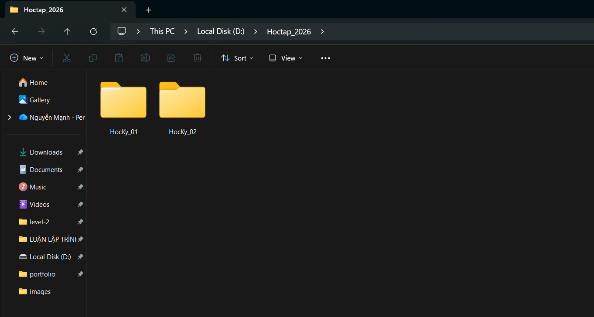
Hiển thị toàn bộ cấu trúc HocTap_2026 với 2 học kỳ
📁 Ảnh 2: Chi tiết HocKy_01
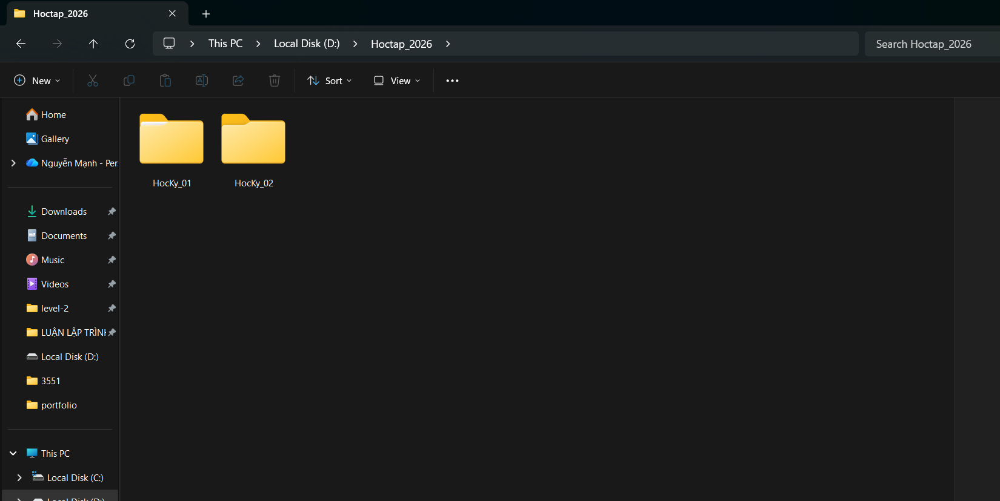
Hiển thị 2 môn học: Mon_Daiso và Mon_GiaiTich1
📚 Ảnh 3: Phân chia Bài Giảng & Bài Tập
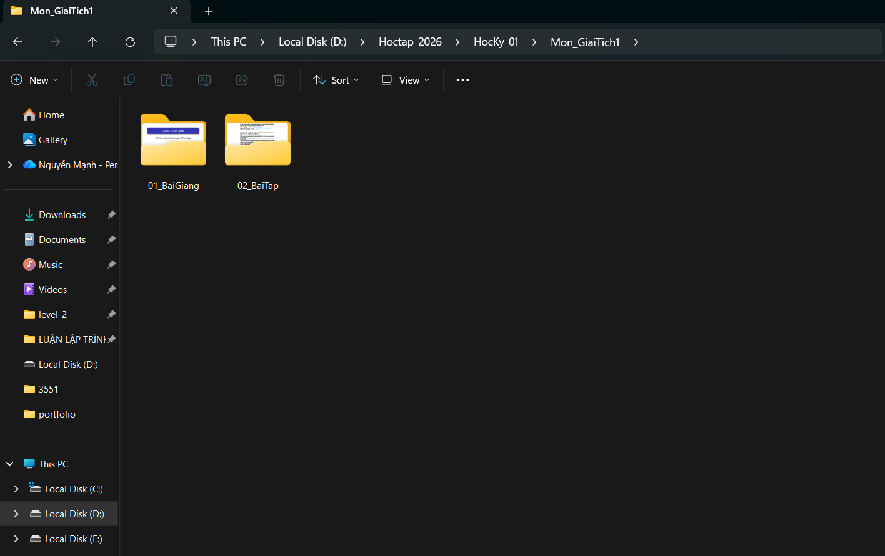
Mỗi môn học được chia thành 2 phần chính
📄 Ảnh 4: Tệp PDF trong BaiGiang
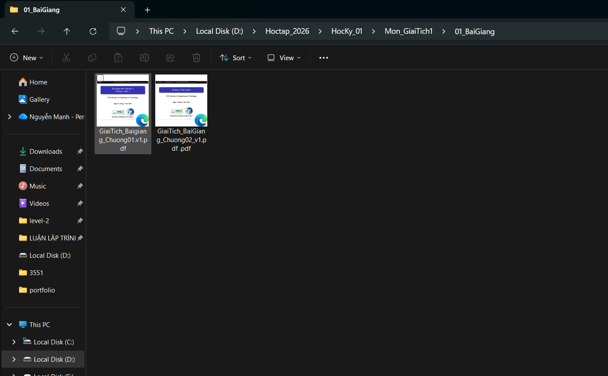
Hiển thị danh sách các tệp tài liệu PDF bài giảng
🎯 Mục Đích Bài Tập
Phát triển kỹ năng tìm kiếm và đánh giá thông tin học thuật từ các nguồn đáng tin cậy. Sinh viên sẽ học cách sử dụng các toán tử tìm kiếm advanced, biết cách phân biệt nguồn đáng tin cậy (Google Scholar, IEEE, Nature, Web of Science) và áp dụng các kỹ thuật này vào việc nghiên cứu, viết báo cáo một cách khoa học và hiệu quả.
🔎 Kỹ Thuật Tìm Kiếm Advanced
1️⃣ Toán tử intitle: - Tìm theo tiêu đề
Ví dụ: intitle:"Communication-Efficient Learning"
Giúp tìm chính xác các bài viết chứa từ khóa này trong tiêu đề, tăng độ chính xác của kết quả tìm kiếm.
2️⃣ Toán tử source: - Tìm từ nguồn cụ thể
Ví dụ: source:"IEEE Signal Processing"
Chỉ định tìm kiếm từ các ấn phẩm, tạp chí xác định, đảm bảo thông tin từ nguồn uy tín.
3️⃣ Toán tử site: - Tìm trên trang web cụ thể
Ví dụ: site:nature.com "Federated Learning"
Tìm kiếm chỉ trong phạm vi một website hoặc miền cụ thể.
4️⃣ Logic AND / OR - Kết hợp từ khóa
Ví dụ: "Federated Learning" AND ("digital health" OR medicine)
AND: cả hai từ phải có; OR: một trong hai từ có thể có.
5️⃣ Toán tử filetype: - Loại tệp cụ thể
Ví dụ: filetype:pdf "Deep Learning"
Chỉ tìm các tệp PDF, DOC, PPT... giúp tìm các bài báo, whitepaper, research paper nhanh chóng.
✅ Đánh Giá Độ Tin Cậy Nguồn
🏛️ Google Scholar
- ✓ Những bài báo được đánh giá cao
- ✓ Từ các tác giả nổi tiếng
- ✓ Được trích dẫn nhiều
📊 IEEE / Nature
- ✓ Tạp chí quốc tế uy tín
- ✓ Peer-reviewed (được đánh giá)
- ✓ Chất lượng cao, đáng tin cậy
🔬 Web of Science
- ✓ Cơ sở dữ liệu khoa học
- ✓ Theo dõi trích dẫn
- ✓ Nghiên cứu chất lượng cao
⚠️ Cách Phân Biệt Thông Tin Đáng Tin Cậy
| ❌ Không Đáng Tin Cậy | ✅ Đáng Tin Cậy |
| Trang web không rõ nguồn gốc | Trang chính thức của tổ chức/đại học |
| Không có tác giả hoặc tác giả ẩn danh | Tác giả rõ ràng, có tiểu sử |
| Không có ngày cập nhật | Có ngày xuất bản, cập nhật gần đây |
| Chứa quảng cáo, popup nhiều | Trang sạch, chuyên nghiệp |
📷 Phần Minh Chứng (Ví Dụ Thực Tế)
📄 Mục 1: Toán tử Intitle & Source
🖼️ Minh chứng 1A (Tìm kiếm tiêu đề)
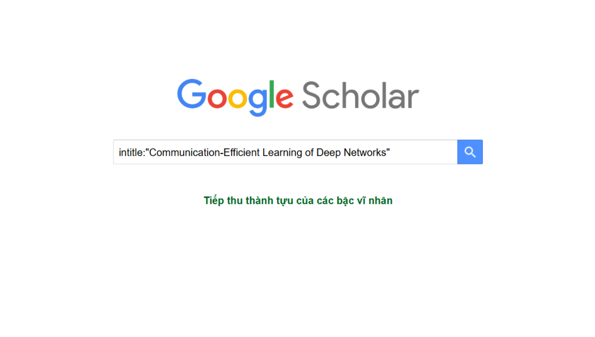
Kết quả thực tế khi áp dụng bộ lọc toán tử intitle: trên thanh công cụ.
🖼️ Minh chứng 1B (Lọc nguồn tạp chí)
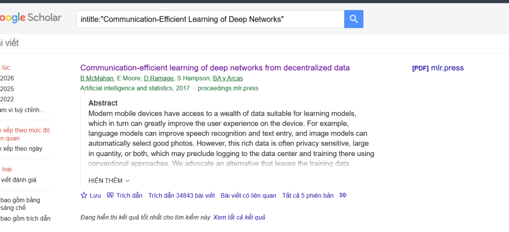
Kết quả trích xuất dữ liệu từ nguồn bài báo khoa học được chỉ định.
🔗 Mục 2: Logic AND/OR
🖼️ Minh chứng 2A (Kết hợp logic AND)
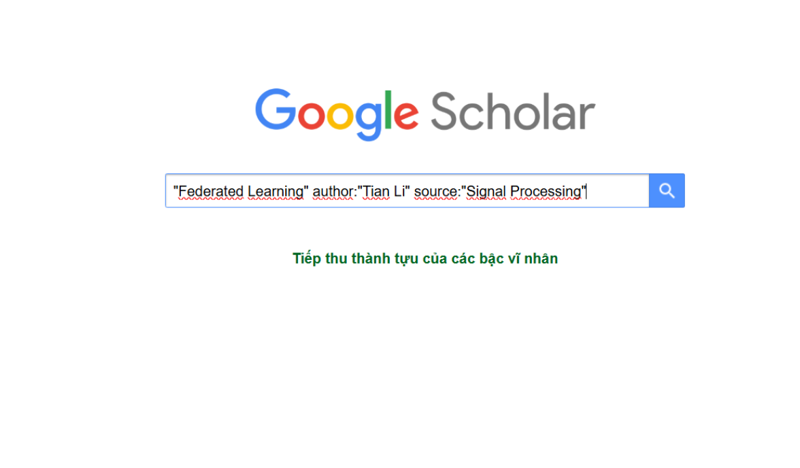
Giao diện hiển thị kết quả đồng thời chứa cả 2 cụm từ khóa nghiên cứu bắt buộc.
🖼️ Minh chứng 2B (Mở rộng từ khóa với OR)
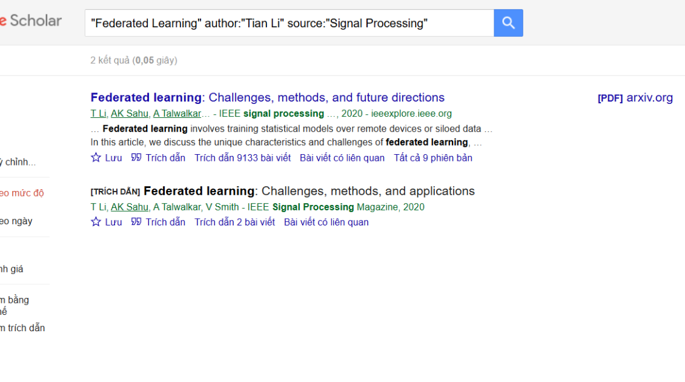
Tối ưu lượng thông tin tìm kiếm bằng cách sử dụng các từ đồng nghĩa thông qua hàm logic OR.
🌐 Mục 3: Toán tử Site:nature.com
🖼️ Minh chứng 3A (Lọc tên miền hệ thống)
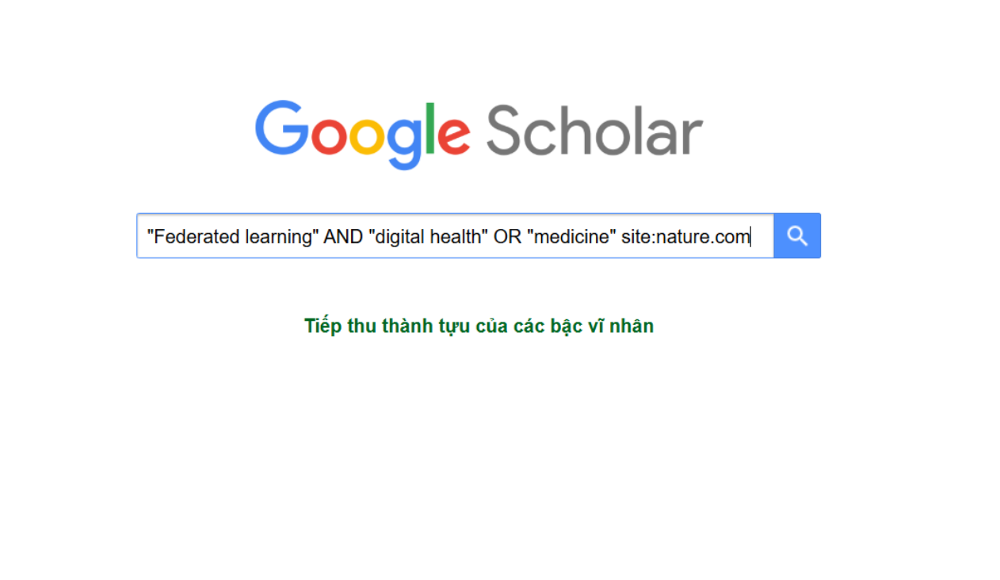
Minh họa việc giới hạn máy chủ tìm kiếm chỉ quét dữ liệu duy nhất tại website chỉ định.
🖼️ Minh chứng 3B (Xác thực dữ liệu miền)
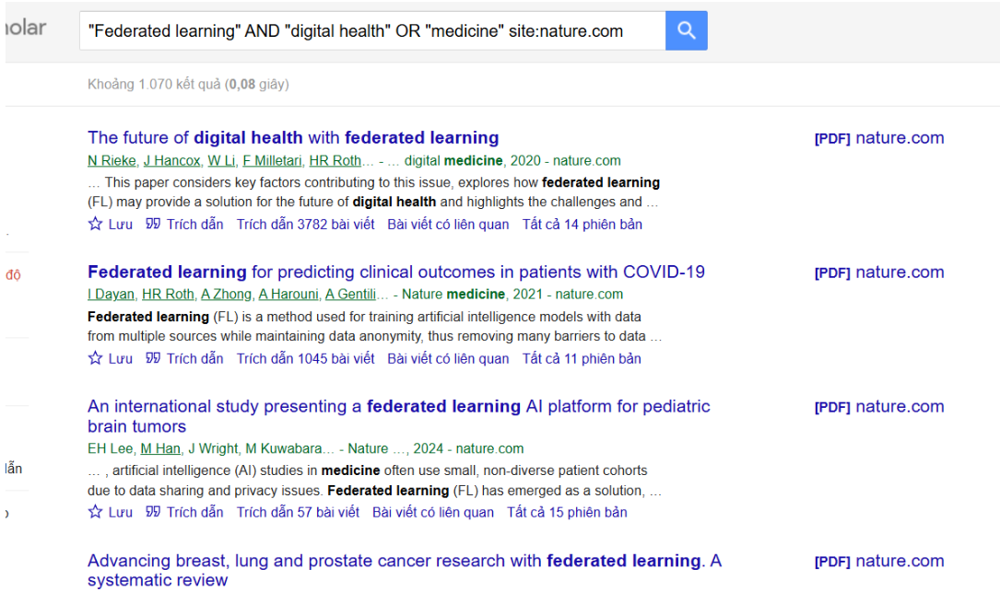
Danh sách các bài nghiên cứu học thuật uy tín được trả về thuộc hệ thống Nature.
🏆 Mục 4: Đánh giá nguồn uy tín BraTS & Intel
🖼️ Minh chứng 4A (Bài viết thuộc dự án lớn)
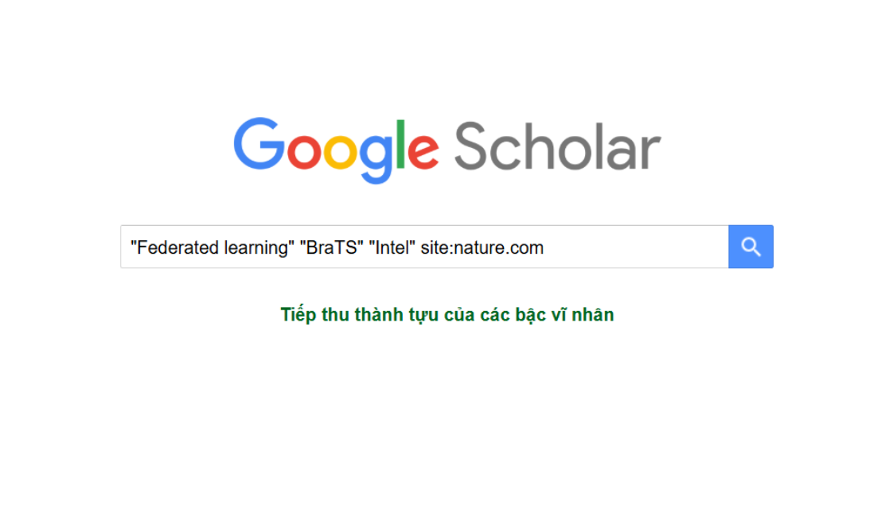
Tìm kiếm thông tin từ các tập đoàn và tổ chức liên kết nghiên cứu y tế quốc tế công nhận.
🖼️ Minh chứng 4B (Chỉ số trích dẫn bài báo)
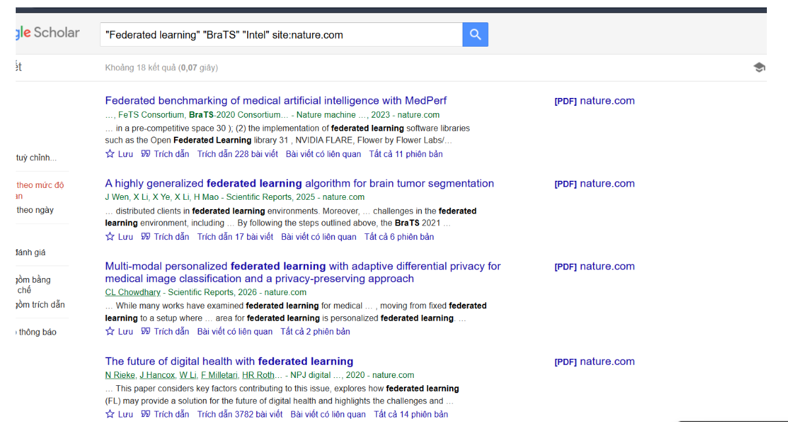
Kiểm tra độ đáng tin cậy thông qua chỉ số tương tác và trích dẫn khoa học thực tế.
📋 Mục 5: Toán tử Filetype:pdf
🖼️ Minh chứng 5A (Lọc định dạng tệp tải về)
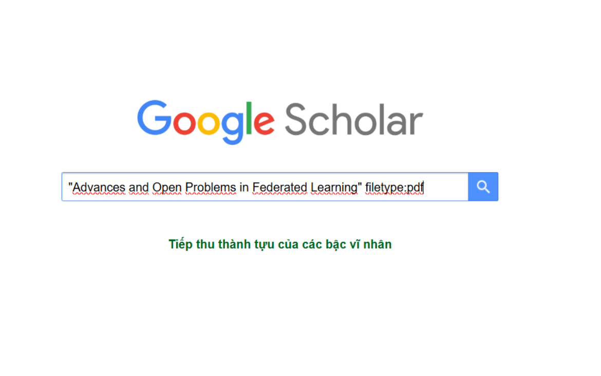
Giao diện công cụ lọc độc quyền các tài liệu lưu trữ ở định dạng đuôi mở rộng .pdf.
🖼️ Minh chứng 5B (Đọc trực tuyến whitepaper)
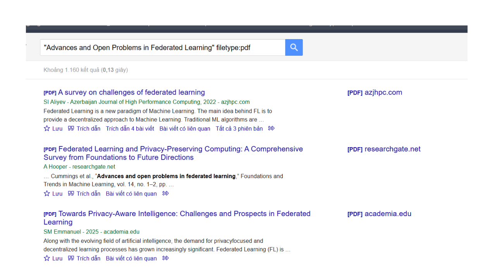
Minh chứng truy cập thành công bản toàn văn (Full-text Research Paper) của tài liệu tìm được.
💡 Các Bước Thực Hành
- Định nghĩa từ khóa: Xác định chủ đề, từ khóa chính cần tìm
- Sử dụng toán tử: Kết hợp intitle, source, site, AND/OR, filetype
- Đánh giá nguồn: Kiểm tra tác giả, thời gian, tổ chức, trích dẫn
- Lưu trữ kết quả: Ghi chú, lưu tài liệu, tạo danh mục tham khảo
- Kiểm chứng lại: So sánh với nhiều nguồn để đảm bảo độ tin cậy
📊 Bảng Đánh Giá Độ Tin Cậy Tài Liệu Học Thuật
| STT | Tài liệu (Tác giả, Năm) / Nguồn | Đánh giá độ tin cậy (TG, PP, TD, CN) | Ưu điểm & Nhược điểm | Xếp hạng |
|---|---|---|---|---|
| 1 |
McMahan et al. (2017) Kỷ yếu hội nghị AISTATS |
TG: Các nhà nghiên cứu từ Google. PP: Thực nghiệm thuật toán FedAvg đột phá. TD: Rất cao (>15.000). CN: 2017 (Nền tảng). |
✓ Ưu: Là bài báo nền tảng khởi nguồn cho Federated Learning. ✗ Nhược: Thuật toán cơ bản, chưa xét đến các kỹ thuật tân công hiện đại. |
Rất Cao (Nền tảng) |
| 2 |
Rieke et al. (2020) Tạp chí Nature Medicine |
TG: Nhóm chuyên gia y tế và AI đa quốc gia. PP: Review & Phân tích viễn cảnh. TD: Cao. CN: 2020. |
✓ Ưu: Đăng trên Nature (tạp chí y khoa hàng đầu), tổng quan cực tốt về ứng dụng y tế. ✗ Nhược: Ít đi sâu vào công thức toán học/code chi tiết. |
Rất Cao (Tổng quan) |
| 3 |
Li et al. (2020) Tạp chí IEEE Signal Processing |
TG: Đại học Carnegie Mellon. PP: Phân tích hệ thống và phân loại phương pháp. TD: >4.000. CN: 2020. |
✓ Ưu: Hệ thống hóa toàn bộ thách thức (Data heterogeneity, Privacy). ✗ Nhược: Không tập trung riêng cho y tế mà nói chung về Data Science. |
Cao |
| 4 |
Sheller et al. (2020) Tạp chí Nature Scientific Reports |
TG: Intel & UPenn. PP: Thực nghiệm phân tích khối u não bằng MRI. TD: >1.500. CN: 2020. |
✓ Ưu: Có dataset y tế thật (BraTS), minh chứng thực tiễn rõ ràng. ✗ Nhược: Chỉ tập trung vào hình ảnh y tế (Medical Imaging), bỏ qua dữ liệu dạng văn bản (EHR). |
Rất Cao (Thực nghiệm) |
| 5 |
Kairouz et al. (2021) Tạp chí Foundations and Trends in ML |
TG: Nhóm 50+ tác giả từ Google, Stanford... PP: Báo cáo toàn diện (Whitepaper/Review). TD: >3.000. CN: 2021. |
✓ Ưu: Khái quát mọi vấn đề mở của FL. Tài liệu gối đầu giường. ✗ Nhược: Rất dài (hơn 100 trang), mất nhiều thời gian để trích xuất thông tin. |
Cao |
🎯 Mục Đích Bài Tập
Khảo sát, trải nghiệm và đánh giá năng lực của các mô hình ngôn ngữ lớn (LLM) phổ biến hiện nay. Qua đó, sinh viên hiểu rõ điểm mạnh, điểm yếu của từng công cụ để áp dụng chính xác vào học tập, đồng thời nắm vững cơ chế vận hành cốt lõi đằng sau các hệ thống AI tiên tiến.
📷 Phần Minh Chứng Thực Hành
🖼️ Ảnh 1: Prompt cơ bản
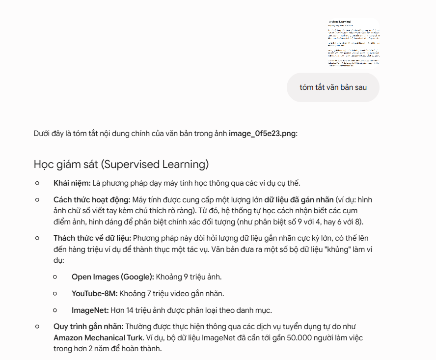
Minh chứng quá trình thử nghiệm câu lệnh (prompt engineering) trên các nền tảng AI khác nhau.
🖼️ Ảnh 2: Prompt cải tiến
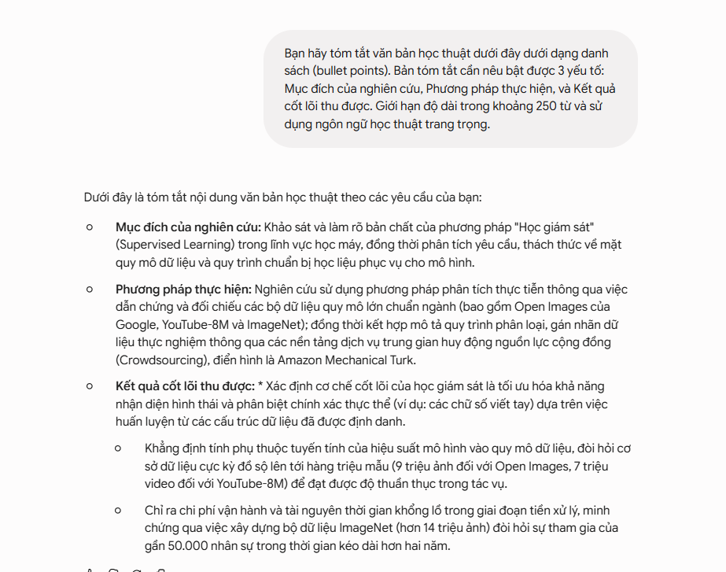
Minh chứng khả năng trích dẫn nguồn và tra cứu trực tuyến (Web Search/Perplexity) của AI.
🖼️ Ảnh 3: Prompt nâng cao
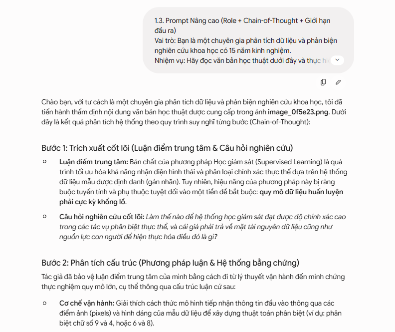
Ghi nhận các trường hợp AI trả lời sai lệch thông tin hoặc lỗi định dạng cấu trúc để phân tích.
📊 Bảng So Sánh Kết Quả Giữa Các Dạng Prompt
| Tiêu chí so sánh | Prompt cơ bản | Prompt cải tiến |
|---|---|---|
| Độ dài văn bản tóm tắt | Dài dòng, lan man, chiếm gần 50% độ dài văn bản gốc. | Ngắn gọn, cô đọng (chỉ khoảng 150-200 từ), tối ưu dung lượng. |
| Cấu trúc hiển thị | Dạng các đoạn văn (paragraphs) thuần túy, thiếu các tiêu đề phân tách, khó theo dõi nhanh. | Chia theo cấu trúc rõ ràng (Mục đích, Phương pháp, Kết quả) kết hợp bullet-points, rất scannable. |
| Mức độ tập trung vào luận điểm cốt lõi | Bị lẫn lộn giữa luận điểm chính và các chi tiết phụ họa/số liệu minh họa không quan trọng. | Chỉ trích xuất các keyword, thông số kỹ thuật cốt lõi và đóng góp chính của bài báo. |
| Khả năng nhận diện điểm hạn chế & hướng mở rộng | Bỏ qua hoàn toàn do các thông tin này thường nằm ẩn ở cuối bài báo. | Bóc tách chính xác các thách thức (giao thức truyền thông, tính bảo mật) và định hướng tương lai. |
💡 Phân Tích Cơ Chế Vận Hành Cốt Lõi Của Mô Hình Ngôn Ngữ Lớn (LLM)
Để giải thích tại sao cùng một mô hình AI lại cho ra các kết quả có sự chênh lệch lớn về chất lượng như trên, chúng ta cần phân tích sâu vào 3 nguyên lý vận hành cốt lõi của Mô hình ngôn ngữ lớn (LLM):
A. Cơ chế chú ý (Attention Mechanism) và việc điều hướng Trọng số (Weights)
- Ở Prompt Cơ bản: Câu lệnh "Tóm tắt bài viết sau đây giúp tôi" cung cấp quá ít "neo ngữ cảnh". Cơ chế Self-Attention của AI sẽ phân bổ ma trận trọng số một cách dàn trải trên toàn bộ văn bản đầu vào. Hệ quả là AI dễ bị đánh lừa bởi các câu văn dài dòng, dẫn đến kết quả đầu ra chỉ là việc "gọt giũa" lại bề nổi của văn bản mà không thể phân tách đâu là luận điểm chính, đâu là luận cứ bổ trợ.
- Ở Prompt Cải tiến: Khi ta ép các từ khóa mục tiêu (Mục đích, Phương pháp, Kết quả) vào câu lệnh, ta đã chủ động tái định hình lại phân phối xác suất của cơ chế Attention. AI buộc phải ưu tiên tìm kiếm và tính toán các phân đoạn văn bản chứa các trường ngữ nghĩa tương ứng, giúp đầu ra cô đọng và đi thẳng vào trọng tâm.
B. Kích hoạt phân vùng tri thức thông qua Định hình Vai trò (Role Prompting)
Trong không gian vector đa chiều của LLM, tri thức được lưu trữ dưới dạng các cụm phân phối xác suất từ ngữ có liên quan đến nhau.
Khi thiết lập vai trò: "Bạn là một chuyên gia phân tích dữ liệu và phản biện nghiên cứu khoa học có 15 năm kinh nghiệm", prompt này đóng vai trò như một bộ lọc không gian (Latent space steering). Nó cô lập và kích hoạt phân vùng ngôn ngữ mang tính học thuật cao, thiên về tư duy phản biện. Nhờ đó, AI tự động sử dụng cấu trúc ngữ pháp phức tạp hơn, lựa chọn từ vựng chuẩn xác hơn và có khả năng nhận diện được các góc khuất của tài liệu (như phần "Điểm hạn chế & Hướng mở rộng" ở hình Ảnh chụp màn hình 2026-06-06 151410.png) mà một người dùng phổ thông thường bỏ qua.
C. Tối ưu hóa chuỗi Tokens dự đoán nhờ Kỹ thuật Chuỗi tư duy (Chain-of-Thought)
Bản chất của AI là dự đoán token (từ/cụm từ) tiếp theo dựa trên các token đã xuất hiện trước đó. Nếu ta bắt AI đưa ra ngay kết luận cuối cùng, nó sẽ tính toán xác suất dựa trên một bước nhảy logic rất lớn, dễ dẫn đến hiện tượng "ảo tưởng" (hallucination) hoặc tóm tắt hời hợt.
Việc chia nhỏ bài toán thành các phân đoạn logic: Bước 1: Trích xuất cốt lõi → Bước 2: Phân tích cấu trúc → Bước 3: Đánh giá & Tổng hợp đã tạo ra một cấu trúc bắc cầu. Token đầu ra của Bước 1 sẽ trở thành dữ liệu đầu vào làm tiền đề ngữ cảnh cực kỳ vững chắc cho Bước 2 và Bước 3. Việc bắt AI "suy nghĩ" có tuần tự này giúp giải phóng năng lượng tính toán của mô hình, đảm bảo tính logic tuyệt đối xuyên suốt toàn bộ văn bản phản hồi.
1. Mục Tiêu Kiến Trúc Quy Trình
Hệ thống hợp tác trực tuyến của Nhóm 33 được xây dựng dựa trên nguyên lý Đồng bộ hóa dữ liệu thời gian thực (Real-time Synchronization) và Quản trị trực quan (Visual Management). Mục tiêu cốt lõi là loại bỏ hoàn toàn sự bất đối xứng thông tin, tối ưu hóa tiến độ dự án nghiên cứu: "CNS - AI (Ứng dụng của AI trong lĩnh vực y tế và sự sống)".
2. Mô Tả Chi Tiết Tích Hợp Tính Năng Nâng Cao & Minh Chứng Thực Nghiệm
Nhóm đã thiết lập và vận hành một hệ sinh thái gồm 5 công cụ số cốt lõi, liên kết chặt chẽ với nhau:
📊 2.1. Quản trị phân rã công việc trực quan qua Trello
Ứng dụng thực tế: Nhóm sử dụng Trello để lập kế hoạch tổng thể thay vì giao việc thủ công. Quy trình Kanban được phân chia khoa học theo các trạng thái động: Hôm nay (Các đầu việc đang xử lý khẩn cấp), Ngày mai - Thứ 7, Chủ nhật, và Thứ 2.
Tính năng nâng cao tích hợp: Tối ưu hóa phân phối nhân lực bằng cách gán Thẻ thành viên (Member Tag) trực tiếp cho từng cá nhân (ví dụ: Thành viên Nguyễn Mạnh Duy chịu trách nhiệm điều phối chính) kết hợp cài đặt thời hạn hoàn thành (Deadline) nghiêm ngặt trên từng đầu việc như "Tìm hình ảnh cho bài dự án cuối kỳ của nhóm (deadline 22h)".
📝 2.2. Biên tập nội dung đồng thời bằng Google Docs (Cloud Co-editing)
Ứng dụng thực tế: Toàn bộ nội dung kịch bản, slide bài giảng được khởi tạo và phân chia cấu trúc phân đoạn rõ ràng nhằm tăng tốc độ xử lý độc lập: P1. Giới thiệu, P2. Ứng dụng, P3. Lợi ích và rủi ro, P4. Kết thúc.
Tính năng nâng cao tích hợp: Tận dụng tính năng Version History (Lịch sử phiên bản) nâng cao để kiểm soát chất lượng đóng góp. Hệ thống ghi nhận chi tiết, minh bạch thời gian chỉnh sửa theo từng phút của các thành viên (Đinh Tuấn Đạt, Nguyễn Hạnh Thùy Dương, Đinh Sỹ Đức, Nguyễn Mạnh Duy). Điều này giúp Trưởng nhóm dễ dàng truy vết chỉnh sửa, khôi phục dữ liệu cũ khi cần và đánh giá khách quan mức độ tích cực của mỗi cá nhân.
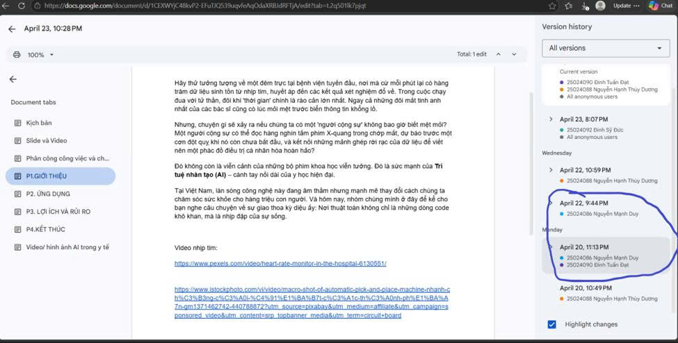
💬 2.3. Trục truyền thông tích hợp: Zalo Chat và Google Meet
Ứng dụng thực tế: Zalo đóng vai trò là kênh giao tiếp nhanh, gửi liên kết phòng họp trực tuyến và chia sẻ tài nguyên tức thời. Trong khi đó, Google Meet đóng vai trò là không gian hội chẩn trực tuyến, thảo luận sâu các vấn đề phức tạp và thực hiện Chia sẻ màn hình (Screen Sharing) để cả nhóm cùng duyệt báo cáo theo thời gian thực.
Tính năng nâng cao tích hợp: Sử dụng tính năng @Mention định danh trên Zalo để triệu tập nhanh các thành viên phụ trách chính (@Đinh Sỹ Đức, @Đinh Tuấn Đạt) vào các cuộc họp khẩn cấp, đồng thời tận dụng hệ thống tương tác biểu cảm nhanh (Reactions) trên Google Meet để biểu quyết nhanh ý kiến mà không ngắt lời người thuyết trình.
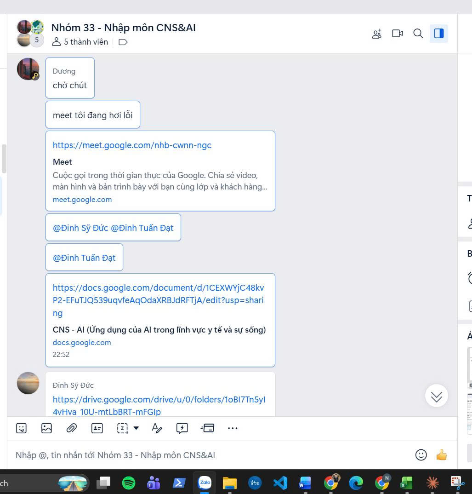
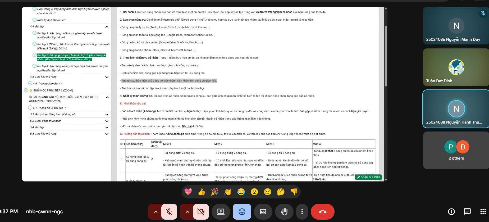
📂 2.4. Lưu trữ cấu trúc hóa tập trung trên Google Drive
Ứng dụng thực tế: Để tránh phân tán tài nguyên và thất lạc tư liệu, toàn bộ các tệp dữ liệu hình ảnh phụ trợ cho chủ đề AI (từ ai1.jpg đến ai8.jpg) được quy hoạch tập trung khoa học tại thư mục: My Drive > Dự án nhóm.
Tính năng nâng cao tích hợp: Cấu hình Phân quyền truy cập nâng cao (Share Link), kết hợp đồng bộ dung lượng lưu trữ đám mây giúp các thành viên truy xuất dữ liệu tức thời với tốc độ cao, đảm bảo tính nhất quán tuyệt đối của học liệu chung.
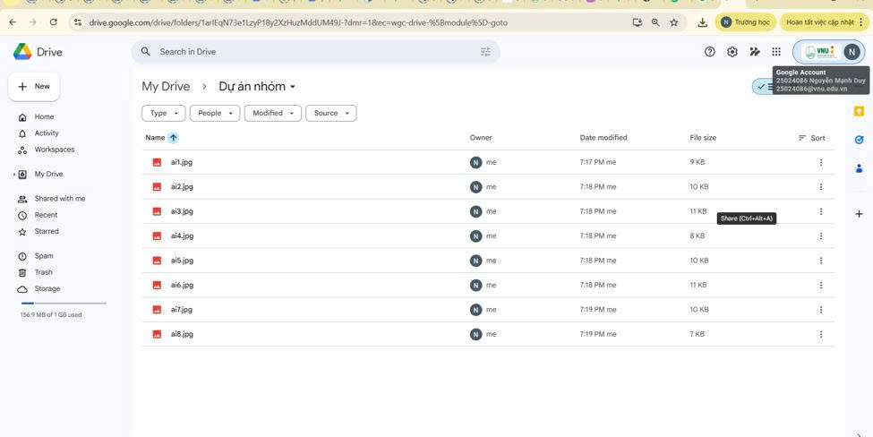
3. Phân Tích Giải Pháp Tối Ưu Hóa Quy Trình Làm Việc Nhóm (Đạt Mức 4)
Quy trình hợp tác này giải quyết triệt để các "điểm nghẽn" (bottlenecks) truyền thống của làm việc nhóm nhờ vào 3 cơ chế tối ưu hóa cốt lõi sau:
🔄 Chuyển đổi từ "Hợp tác tuần tự" sang "Hợp tác song song"
Nhờ tính năng Cloud co-editing của Google Docs, các thành viên không cần đợi người trước viết xong mới đến lượt mình. Mọi người cùng viết trên một phôi tài liệu tại cùng một thời điểm, giúp rút ngắn 50% thời gian hoàn thiện bản thảo kịch bản dự án.
📉 Giảm thiểu tối đa "Chi phí giao tiếp" (Communication Overhead)
Trello giúp số hóa toàn bộ trạng thái công việc trực quan. Thay vì phải nhắn tin hỏi liên tục "Bạn đã làm xong phần này chưa?", các thành viên chỉ cần nhìn vào bảng Kanban là nắm bắt được toàn cục tiến độ, từ đó tự động điều phối công việc cá nhân sao cho khớp với tiến độ chung.
⚖️ Tăng tính cam kết và minh bạch (Accountability)
Việc hiển thị rõ ràng lịch sử chỉnh sửa (Version History) và phân cụm công việc cụ thể giúp loại bỏ hoàn toàn hiện tượng "ỷ lại" trong làm việc tập thể. Mọi đóng góp xuất sắc hoặc sự chậm trễ tiến độ đều được ghi nhận một cách khách quan trên hệ thống đám mây.
🎯 Mục Đích Bài Tập
Để hoàn thiện sản phẩm truyền thông chuyên nghiệp về chủ đề "AI trong Y tế - Cuộc cách mạng hóa chăm sóc sức khỏe", nhóm đã thiết lập một quy trình sản xuất nội dung khép kín gồm 3 giai đoạn, tối ưu hóa sức mạnh của 3 công cụ AI chuyên biệt: Gemini AI (Xử lý ngôn ngữ), Dreamina AI (Generative Art - Khởi tạo hình ảnh), và Canva AI (Thiết kế đồ họa & Thuyết trình chuyên sâu).
📝 GIAI ĐOẠN 1: THIẾT KẾ CẤU TRÚC KỊCH BẢN VÀ NỘI DUNG VĂN BẢN (GEMINI AI)
Nhóm không sử dụng các câu lệnh ngắn, đơn giản mà áp dụng kỹ thuật Role-play Prompting (Định hình vai trò chuyên sâu) để khai thác tối đa tư duy phân tích của mô hình ngôn ngữ lớn.
🔧 Kỹ thuật Prompting áp dụng
Định hình AI thành một chuyên gia thiết kế và sáng tạo nội dung trong lĩnh vực y tế:
"bạn là người chuyên về thiết kế và sáng tạo nội dung, hãy soạn cho tôi 1 bài thuyết trình về ứng dụng của AI trong y tế."
📋 Kết quả xử lý logic cấu trúc
Hệ thống Gemini AI đã trả ra một bộ khung kịch bản cấp cao với nội dung trình bày gồm 5 phần lớn:
- Mở đầu: Bối cảnh cảnh báo (The Hook): Phân tích sự quá tải hệ thống y tế thế giới và giải pháp mang tính định hướng của AI.
- Các ứng dụng trọng tâm (The Core): Phân tích chi tiết 4 trục cốt lõi gồm: Chẩn đoán hình ảnh & Phát hiện sớm; Cá nhân hóa phác đồ điều trị; Nghiên cứu phát triển thuốc/Vắc-xin (AlphaFold); Phẫu thuật Robot (Hệ thống Da Vinci).
- Lợi ích mang lại (The Value): Lập bảng so sánh chi tiết dựa trên 3 tiêu chí: Độ chính xác, Tốc độ, và Tính tiết kiệm.
- Thách thức và Đạo đức (The Human Side): Nhìn nhận đa chiều về bảo mật dữ liệu, trách nhiệm pháp lý và sự thấu cảm.
- Kết luận: Đúc kết bằng thông điệp truyền cảm hứng mạnh mẽ.
📸 Minh chứng Giai đoạn 1: Giao diện Gemini AI & Kết quả Kịch bản
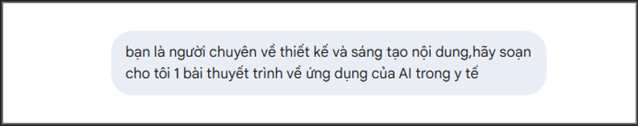
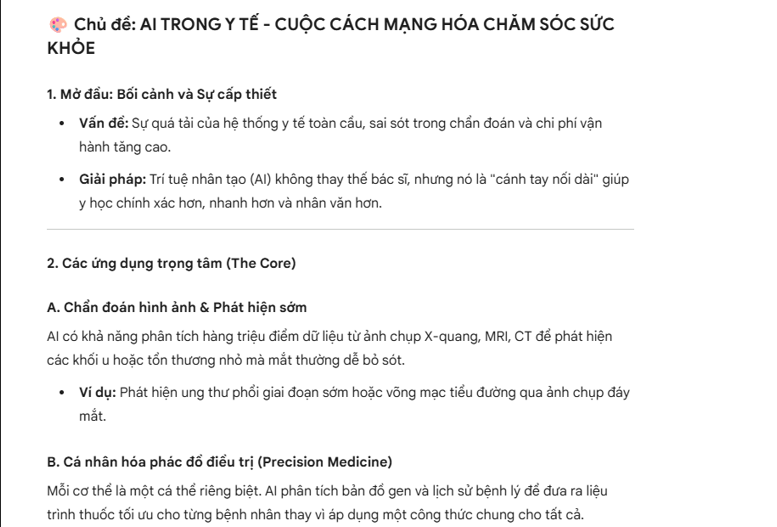
Hình ảnh ghi lại quá trình tương tác Prompt và kết quả khung kịch bản được Gemini AI xuất ra.
🎨 GIAI ĐOẠN 2: THIẾT KẾ THỊ GIÁC VÀ SÁNG TẠO HÌNH ẢNH MINH HỌA (DREAMINA AI)
Để cụ thể hóa các khái niệm y tế phức tạp thành hình ảnh trực quan cao cấp, nhóm đã tận dụng công cụ Dreamina AI với các chuỗi Prompt cá nhân hóa cho từng phân đoạn. Nhóm đã tinh chỉnh chất lượng đầu ra thông qua việc điều chỉnh các tham số kỹ thuật để tạo ra các bức ảnh nghệ thuật đồ phân giải cao, chân thực.
🖼️ Quy trình 1: Khởi tạo bối cảnh hiện đại
Prompt sử dụng: "tạo cho tôi hình ảnh các thiết bị hiện đại trong y tế hiện nay".
Kết quả tối ưu: AI kết xuất hệ thống 4 bức ảnh bao gồm máy quét MRI hiện đại, cánh tay robot phẫu thuật mổ cảm tay, màn hình neon và trắng chuẩn y khoa.
🧬 Quy trình 2: Minh họa phát triển thuốc và nghiên cứu phân tử
Prompt sử dụng: "Phát triển thuốc và Vắc-xin đi (tạo hình ảnh)".
Kết quả tối ưu: Hình ảnh cấu trúc mô phỏng phân tử liên kết hóa học, phòng thí nghiệm hiện đại cảm tay chi tiết vi mô sắc nét.
🚀 Quy trình 3: Sáng tạo viễn cảnh y tế tương lai
Prompt sử dụng: "TẠO CHO TÔI HÌNH ẢNH VỀ AI TRONG Y TẾ TƯƠNG LAI".
Kết quả tối ưu: Quy trình phân tích tích cực của AI: Hệ thống tổng động phân ra câu lệnh thành các lệnh thành phần, cánh tay robot hỗ trợ, màn hình hologram quét não bộ, robot y tế tương tác với người cao tuổi, màn hình kỹ thuật số phân tích DNA. Các hình ảnh được xuất theo tỷ lệ điện ảnh $16:9$ tỉ lệ chiều sâu chuyên nghiệp.
📸 Minh chứng Giai đoạn 2: Giao diện Dreamina AI & Các hình ảnh được tạo ra
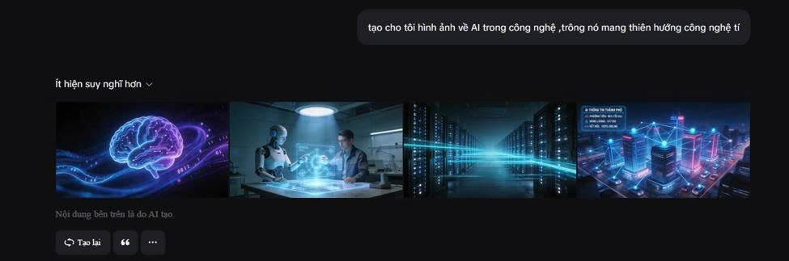
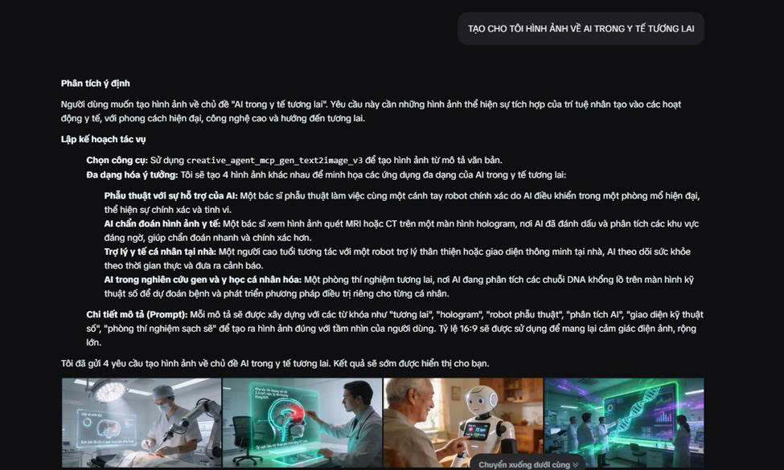
Hình ảnh ghi lại giao diện Dreamina AI và các bộ ảnh minh họa y tế tương lai được xuất ra.
🖥️ GIAI ĐOẠN 3: TÍCH HỢP THIẾT KẾ VÀ TINH CHỈNH ĐỒ HỌA (CANVA AI)
Sau khi có dữ liệu văn bản từ Gemini và dữ liệu hình ảnh từ Dreamina, nhóm sử dụng Canva AI để tổng hợp toàn bộ thành một sản phẩm bài thuyết trình (Presentation Slides) hoàn chỉnh.
⚡ Quy trình xử lý thiết kế tự động
Chỉ với vài dữ liệu đầu vào cơ bản kết hợp các câu lệnh bổ sung nội dung, Canva AI tự động sắp xếp văn bản và hình ảnh một cách hài hòa.
🎯 Kỹ thuật tinh chỉnh chuyên sâu (Prompting hiệu chỉnh)
Nhóm không bằng lòng với kết quả mặc định ban đầu mà tiến hành tối ưu hóa thị giác chuyên nghiệp bằng câu lệnh hiệu chỉnh nâng cao:
"tạo cho tôi tone màu trầm hơn".
✅ Kết quả đạt được
Canva AI đã đáp ứng và xử lý tái tạo lại bài thuyết trình với việc phủ tone màu xanh navy đậm kết hợp xen đen để tạo cảm giác công nghệ cao, tăng cường tập trung và nâng cao tính thẩm mỹ học thuật cho toàn bộ sản phẩm.
📸 Minh chứng Giai đoạn 3: Giao diện Canva AI & Bản thuyết trình hoàn chỉnh
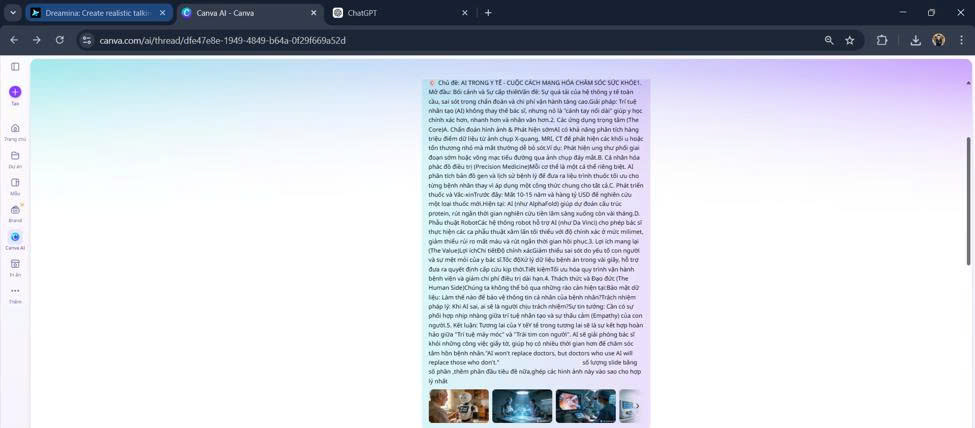
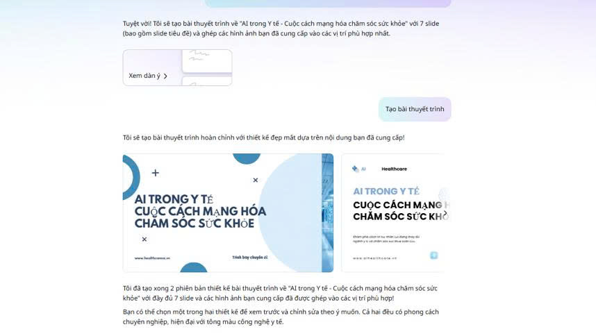
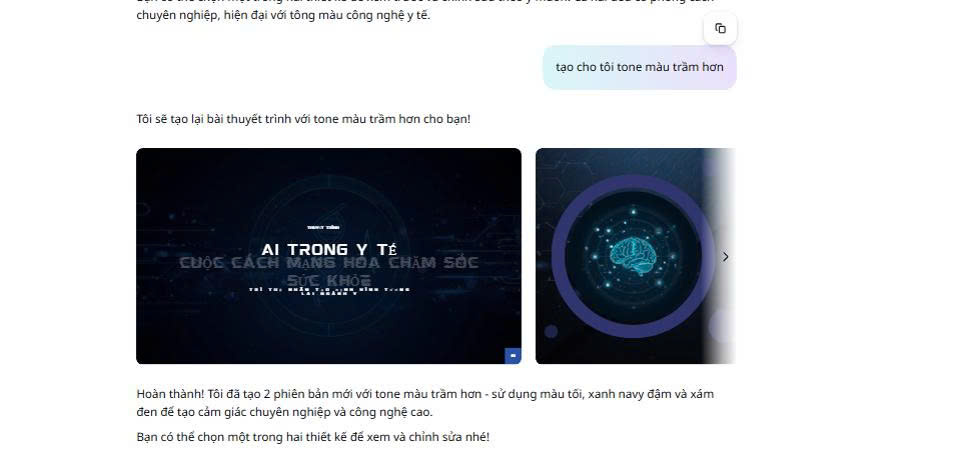
Hình ảnh ghi lại giao diện Canva AI và sản phẩm bài thuyết trình sau khi tinh chỉnh tone màu chuyên nghiệp.
📊 Bảng Đánh Giá Năng Lực Ứng Dụng 3 Công Cụ AI
| Công cụ AI | Đóng vai trò trong quy trình | Đánh giá năng lực tận dụng nâng cao |
|---|---|---|
| Gemini AI | Trục phát triển nội dung nguyên gốc và tư duy | Trình bày tương đối ngắn gọn, rõ nét và rất đầy đủ, lập luận logic. Đóng vai trò làm "bộ não" định hướng toàn cục dự án. |
| Dreamina AI | Trục sáng tạo thị giác và ngôn ngữ thị giác độc quyền | Rất sáng tạo với hình ảnh đa dạng sắc nét. Thao tác tạo hình ảnh tối ưu hơn, cung cấp các chú thích rõ ràng, mô phỏng chính xác mong muốn thiết kế của người dùng. |
| Canva AI | Trục đóng gói và phối sản phẩm số | Cực kỳ chuyên nghiệp. Tối ưu hóa thời gian thiết kế bằng cách tự động dàn trang dữ liệu trên dữ liệu, cho phép tinh chỉnh nhanh phong cách (Style) thông qua ngôn ngữ tự nhiên. |
1. Nghiên Cứu & Liên Kết Bối Cảnh Chính Sách AI
Hành vi sử dụng Trí tuệ nhân tạo (AI) của cá nhân trong học tập và nghiên cứu không thể tách rời khỏi khung pháp lý vĩ mô. Qua hệ thống nghiên cứu, quy định hiện hành đã định hình rất rõ ranh giới này thông qua hai cấp độ quản lý:
2. Tư Duy Phản Biện Về Các Thách Thức Đạo Đức AI Trong Học Thuật
2.1. Ranh giới mong manh giữa Hỗ trợ hợp lý và Gian lận học thuật
Sự phức tạp nằm ở chỗ không có một ranh giới tuyệt đối, tạo ra một "vùng xám" lớn đòi hỏi tính tự giác cao:
| ✅ Hỗ trợ hợp lý (Chấp nhận) | ❌ Gian lận học thuật (Cấm kỵ) | ⚠️ Vùng xám (Tranh luận mở) |
|---|---|---|
|
• Tận dụng AI làm "người hỏi đáp" để hiểu sâu bài học. • Tìm kiếm tài liệu, gợi ý hướng nghiên cứu. • Kiểm tra lỗi ngữ pháp, chính tả hoặc tóm tắt các tài liệu dài. |
• Phó mặc hoàn toàn cho AI viết toàn bộ bài luận rồi nộp. • Sử dụng AI để làm bài kiểm tra thay mình. • Tạo ra dữ liệu/kết quả nghiên cứu giả do AI tự bịa ra (Hallucination). |
• Sinh viên để AI viết bản nháp ban đầu rồi tự chỉnh sửa lại từ 30% - 70% nội dung. • Dùng AI tạo outline (dàn ý) chi tiết rồi tự viết theo. → Liêm chính dựa vào hệ giá trị tự giác của người học. |
2.2. Thách thức quyền sở hữu trí tuệ và trích dẫn
Tính pháp lý: Các mô hình AI được huấn luyện dựa trên hàng tỷ văn bản có bản quyền từ internet. Khi AI "viết lại" (paraphrase) ý tưởng, ranh giới đạo đức bị mờ nhạt. Luật bản quyền truyền thống (bao gồm cả Việt Nam) chưa công nhận AI là tác giả của nội dung do nó tạo ra.
OpenAI. (2023). ChatGPT [Large language model]. https://chatnav.openai.com
2.3. Tác động dài hạn đến năng lực tư duy
3. Đề Xuất Giải Pháp Qua Bộ 7 Nguyên Tắc Cá Nhân Hành Động
Để giải quyết triệt để các thách thức về mặt đạo đức và tối ưu hóa năng lực học tập cá nhân, tôi tự thiết lập bộ nguyên tắc hành động gồm 7 điều chi tiết (Hệ giá trị cốt lõi):
💡 Nguyên tắc 1: AI là công cụ hỗ trợ tư duy — Không phải người thay thế tư duy
Nội dung: Chỉ dùng AI sau khi đã tự suy nghĩ. AI để mở rộng, kiểm tra hoặc phản biện lại suy nghĩ của tôi — không phải để "nghĩ thay".
👉 Giải pháp hành động: Tự lập dàn ý lập luận trước khi hỏi AI; gặp khái niệm khó thì đọc tài liệu gốc trước, chỉ dùng AI giải thích chỗ chưa hiểu rõ.
📢 Nguyên tắc 2: Minh bạch hoàn toàn về việc sử dụng AI
Nội dung: Khai báo rõ ràng trong mọi bài nộp. Sự minh bạch là nền tảng tối thượng của liêm chính học thuật.
👉 Giải pháp hành động: Thêm phần "Ghi chú sử dụng AI" ở cuối bài (ghi rõ công cụ, mục đích, mức độ chỉnh sửa); Trích dẫn AI theo đúng chuẩn APA 7th khi nội dung AI ảnh hưởng đến bài viết.
🛡️ Nguyên tắc 3: Luôn kiểm chứng và chịu trách nhiệm với đầu ra của AI
Nội dung: Không bao giờ nộp bất kỳ nội dung nào từ AI mà chưa qua kiểm tra, xác minh. Tôi là người chịu trách nhiệm pháp lý và chuyên môn cuối cùng.
👉 Giải pháp hành động: Kiểm tra chéo số liệu đối chiếu với tài liệu gốc uy tín; chủ động viết lại bằng giọng văn cá nhân để tránh lỗi thông tin sai lệch (hallucination) của AI.
🚫 Nguyên tắc 4: Xác định rõ "Vùng cấm" cá nhân — Những việc không bao giờ dùng AI
Nội dung: Cam kết hoàn toàn tự lực để rèn luyện năng lực thật sự ở các học phần và nội dung cốt lõi.
⛔ Danh sách vùng cấm: Bài kiểm tra/thi cử dưới mọi hình thức; Phần lập luận trực tiếp và kết luận mang tính cá nhân trong bài luận; Nhật ký phản tư cá nhân và bài tập tự đánh giá.
📝 Nguyên tắc 5: Đánh giá chất lượng Prompt — Đầu vào tốt tạo ra đầu ra tốt
Nội dung: Đầu tư thời gian viết câu lệnh (prompt) rõ ràng, mang tính tư duy cụ thể để kiểm tra luận điểm của bản thân thay vì xin câu trả lời ăn sẵn.
👉 Giải pháp hành động: Cung cấp đủ ngữ cảnh bài học. (Ví dụ prompt tốt: "Tôi đang viết bài luận về tác động của AI đến tư duy sinh viên. Dàn ý của tôi là [...]. Hãy chỉ ra điểm yếu trong lập luận của tôi và gợi ý cách củng cố.")
⚖️ Nguyên tắc 6: Cân bằng — Biết khi nào nên và không nên dùng AI
Nội dung: Chủ động lựa chọn những khoảng thời gian tách biệt hoàn toàn khỏi AI để rèn luyện tư duy độc lập của não bộ.
👉 Giải pháp hành động: Ít nhất một lần mỗi tuần làm bài tập hoàn toàn bằng tay và tài liệu giấy, không chạm vào AI; tự tiếp thu và hiểu kiến thức cơ bản trước khi mở công cụ trợ lý kỹ thuật số.
🔄 Nguyên tắc 7: Phản tư định kỳ về cách mình dùng AI
Nội dung: Tự đánh giá nghiêm túc lại hiệu quả thực tế và đạo đức sử dụng AI sau mỗi học kỳ.
👉 Giải pháp hành động: Duy trì một nhật ký ngắn ghi lại các lần tương tác AI đáng chú ý; tự chất vấn bản thân vào cuối kỳ: "Nếu không có AI hỗ trợ, tôi có tự mình hoàn thành được bài tập này không?" để kịp thời điều chỉnh hành vi.
📷 Phần Minh Chứng Kỹ Năng Thiết Kế Prompt Học Thuật
💬 Ảnh 1: Xây dựng Prompt phản biện chuyên sâu

Giao diện thực tế áp dụng Nguyên tắc 5: Cung cấp dàn ý và yêu cầu AI tìm lỗ hổng lập luận thay vì làm hộ bài.
📝 Ảnh 2: Khai báo minh bạch (AI Disclosure) & Trích dẫn APA 7th

Minh chứng thực hành Nguyên tắc 2: Thêm ghi chú chi tiết về mục đích sử dụng AI ở cuối bài luận học thuật.